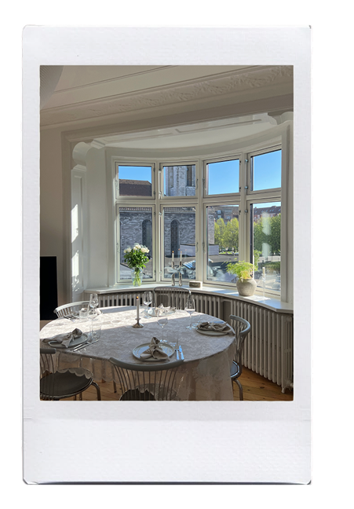
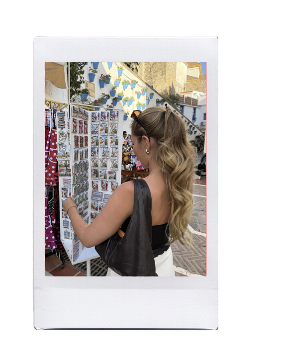
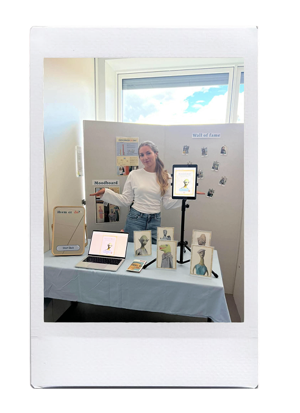

Hvem er jeg?
Jeg er 24 år og studerer multimediedesign på
Erhvervsakademi Aarhus, hvor jeg går på 3. semester på
ExD-linjen.
Jeg brænder for digitalt design, elsker at nørde med kode og nyder
at skabe visuelt indhold, der både er æstetisk og gennemtænkt. Jeg
finder inspiration overalt omkring mig, på sociale medier, i
butikker, i mit hjem eller hos mine veninder. Jeg er meget
nysgerrig på mine omgivelser og lader mig gerne inspirere af nye
idéer, mennesker og indtryk. Min kreativitet kommer også til
udtryk i mit eget hjem, hvor jeg bruger meget tid på indretning og
på at skabe et rum, der afspejler
min personlige stil.
Som person er jeg meget åben og nysgerrig på andre mennesker. Jeg elsker at lære nye mennesker at kende og kan bruge lang tid på gode samtaler, både om stort og småt. Jeg sætter pris på at høre andres holdninger og perspektiver, fordi jeg synes, det er med til at udfordre min egen måde at se verden på. Jeg møder nye mennesker med et åbent sind og forsøger altid at se det bedste i dem.


Hvad kan jeg så tilbyde jer?
I et team er jeg meget fleksibel i forhold til
min rolle. Hvis der ikke naturligt opstår en leder, tager jeg
gerne initiativet og går forrest. Jeg har et stort gåpåmod og er
ikke bange for at tage ansvar eller føre an.
Hvis en anden derimod har lyst til at lede teamet, træder jeg
gerne et skridt tilbage og bidrager på andre måder. Jeg ser det
som en styrke, at jeg trives i
forskellige roller, fordi jeg kan tilpasse mig
teamets behov og samtidig bidrage aktivt til, at vi når i mål
sammen.
Jeg brænder for at skabe et
trygt og positivt miljø, uanset om det er blandt
mine veninder eller på en arbejdsplads. Jeg går engageret ind i
mine opgaver og gør altid mit bedste for at levere
et godt resultat.
Jeg er ikke bange for at prøve mig frem og finde løsninger på egen
hånd, men jeg er samtidig heller ikke bange for at spørge om
hjælp, når det er nødvendigt. Jeg ser samarbejde som en af de
største styrker i et team og sætter stor pris på konstruktiv
feedback, både fra kollegaer og andre omkring mig.

Lyder det som noget for jer?
Så vil jeg meget gerne høre fra jer!
✉ Kontakt mig her